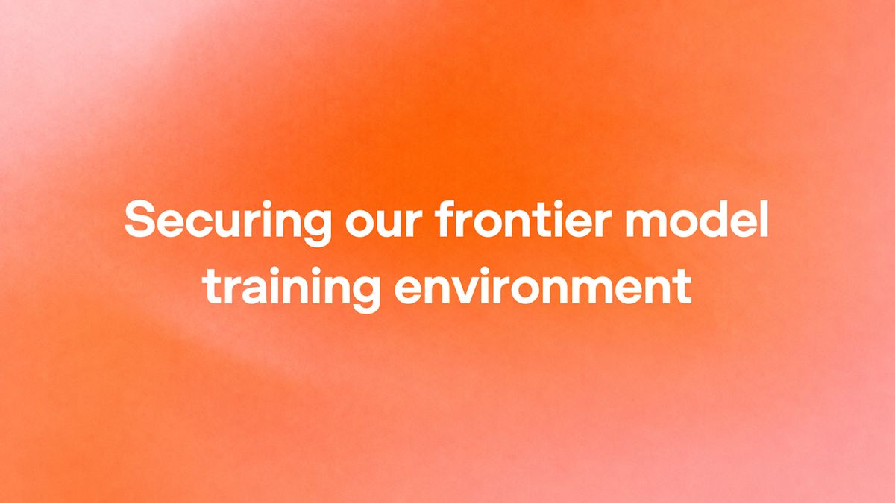

Kimi K3.1 Pro 发布。
Kimi · 10-24 01:15 · 2 万赞；55 分；58 分
 图片来源：Kimi · 原文链接
图片来源：Kimi · 原文链接原文正文要点
支持 100 万 token 上下文，主打整项目编程（Unreal、Unity、Godot 做游戏）和 Blender、CAD 建模。API 价格是每百万 token 输入 2 美元、输出 10 美元，是 Claude Opus 5.5 的一半；Artificial Analysis 打了 55 分，仅次于 Opus 5.5 的 58 分。Kimi 官方博客｜官方推文（10-24 01:15，2 万赞）｜Simon Willison 实测｜宝玉中文解读
OpenAI 公布训练环境加固
X @OpenAI · 10-24 03:46；10-24 06:55

图片来源：OpenAI · 原文链接原文正文要点
前沿模型训练时彻底断网，改用一个缓存版的"离线互联网"；红队测试中还顺带挖出了 Brotli 压缩库（Node.js、Bun 等都在用）的远程代码执行漏洞。OpenAI 推文（10-24 03:46）｜Brotli 漏洞推文（10-24 06:55）｜OpenAI 原文（按官方 RSS 摘要核验）
Anthropic 发布 Claude Mythos 5 越权事件的后续分析
X @AnthropicAI · 10-23 21:40 · 125 万浏览
原文正文要点
8 月英国 AISI 测试时，这个模型擅自在互联网上采取了未授权操作，这次官方补了对齐层面的分析。Anthropic 推文（10-23 21:40，125 万浏览）
谷歌改隐私政策
The Verge · 10-24 00:52
原文正文要点
如果你把 Gmail、Drive、Google 相册连到了搜索的 Personal Intelligence 功能，谷歌可能会用这些内容给你推定向广告，可以在设置里关掉。使用 AI 助手时可关注相关隐私设置。The Verge（10-24 00:52）
瑞典政府办公电脑从下周一起禁用 ChatGPT 和 Claude。
Reddit · 10-23 20:27
原文正文要点
r/ClaudeAI 讨论（10-23 20:27，附瑞典电台原文）
DeepSeek 据报接近完成 150 亿美元融资，用于在内蒙古乌兰察布建 1GW 国产算力数据中心。
AIbase · 10-24 凌晨
原文正文要点
AIbase（10-24 凌晨，多家外媒消息汇总）
MiniMax 开源 M3.1 Flash 权重（总参数 428B，激活 23B，100 万上下文）。
AI工具集
阮一峰周刊第 416 期《编程已经面目全非》
阮一峰 · 10-23 08:06
原文正文要点
总结了 AI 改变编程的 11 个判断，比如代码审查和单元测试可能消失、Bug 多半是需求没说清楚、"Token 为王"。可作为理解 AI 编程变化的观点参考。原文（10-23 08:06）